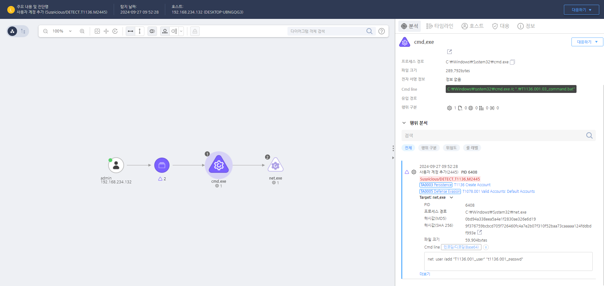

MITRE ATT&CK 액션을 기준으로 대응 방안을 작성
net.exe 프로세스를 이용한 명령어에 user /add 가 포함되는 경우 탐지한다.

의심스러운 계정 생성이 발견될 경우, 즉시 해당 계정을 비활성화하고, 관련 시스템에서 발생한 다른 이상 징후를 조사합니다.
로컬 계정 생성 제한 (M1026 - Privileged Account Management & M1038 - Execution Prevention)
net user /add 또는 PowerShell을 통해 계정을 생성하지 못하도록 제한 /etc/sudoers 파일을 수정하여 useradd 및 adduser 명령어 실행을 제한 로컬 계정 생성 이벤트 모니터링 (M1047 - System Logging & Monitoring)
/var/log/auth.log 및 /var/log/secure에서 useradd 및 passwd 명령어 실행 기록 감시 비인가 계정 사용 제한 (M1032 - Multi-Factor Authentication & M1018 - User Account Management)
특정 계정 생성 차단 (M1031 - Network Segmentation & M1022 - Restriction of Use of Certain Functions)
net user 및 New-LocalUser 명령어 실행 차단 보안 정책 및 사용자 교육 (M1019 - Awareness and Training)
Action 실행시 함께 영향을 받는 다른 Techniqes
| ATT&CK |
|---|
| T1136.001 |
| D3FEND |
|---|
| D3-FIM File Integrity Monitoring |
| D3-PLA Process Lineage Analysis |